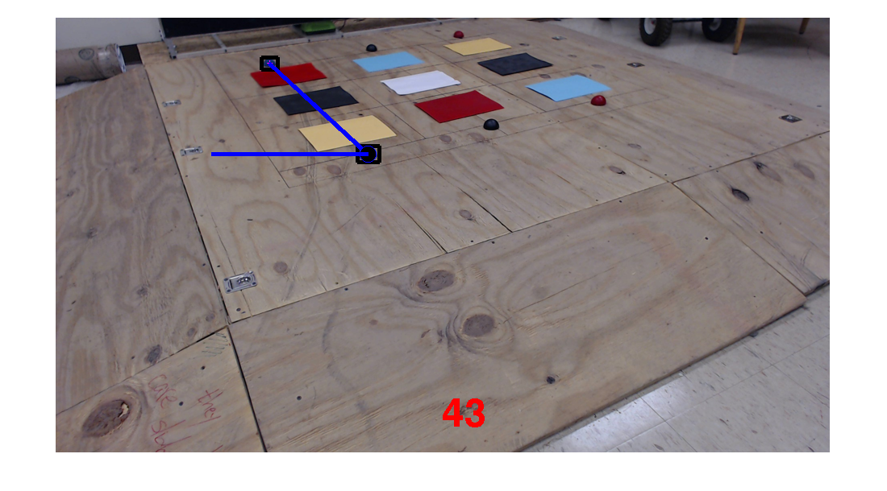

only works on blue line
Contents
assumes that blue balls are only thing in frame
clear all
close all
clc
data = imread('Picture 26.jpg');
data = imresize(data,.5);
Channel_1 = data(:,:,1)+data(:,:,2);
Blue = data(:,:,3)-Channel_1;
figure
imshow(Blue)
BW = im2bw(Blue,.05);
BW = bwareaopen(BW,50);
se = strel('disk',4);
dilatedBW = imdilate(BW,se);
figure, imshow(dilatedBW)
BW1 = imdilate(BW,se);
stats = regionprops(BW1, 'BoundingBox', 'Centroid');
figure
imshow(data)
hold on
for object = 1:length(stats)
bb = stats(object).BoundingBox;
bc = stats(object).Centroid;
rectangle('Position',bb,'EdgeColor','k','LineWidth',5)
plot(bc(1),bc(2), '-m+')
Points(object,:) = bc;
end
X = [Points(2,1),Points(1,1)];
Y = [Points(2,2),Points(1,2)];
if Y(1) < Y(2)
tempx = X;
tempy = Y;
Y(1) = tempy(2);
Y(2) = tempy(1);
X(1) = tempx(2);
X(2) = tempx(1);
end
dist = X(1)/2;
plot(X,Y,'LineWidth',5)
plot(X(1),Y(1),'o','Markersize',20,'MarkerFaceColor','k');
plot([X(1),X(1)-dist],[Y(1),Y(1)],'LineWidth',5)
v1 = [X(2),Y(2)] - [X(1),Y(1)];
v2 = [X(1)-dist,Y(1)] - [X(1),Y(1)];
ang = atan2(v1(1)*v2(2)-v2(1)*v1(2),v1(1)*v2(1)+v1(2)*v2(2));
Angle = mod(-180/pi * ang, 360);
size = size(BW);
x = size(2)/2;
y = size(1)-50;
angle = round(Angle);
str = num2str(angle);
text(x,y,str,'FontSize',50,'FontWeight','bold','Color',[1,0,0])
hold off
